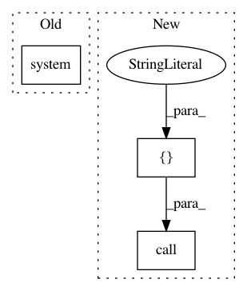

ce07d8b44c8a369b120587a3fff7a13f32424c37,data/get_an4.py,,main,#,60
Before Change
args = parser.parse_args()
root_path = "an4/"
name = "an4"
os.system("wget http://www.speech.cs.cmu.edu/databases/an4/an4_raw.bigendian.tar.gz")
os.system("tar -xzvf an4_raw.bigendian.tar.gz")
os.makedirs(args.an4_path)
format_data("train", name, "an4_clstk")
format_data("test", name, "an4test_clstk")
After Change
args = parser.parse_args()
root_path = "an4/"
name = "an4"
subprocess.call(["wget http://www.speech.cs.cmu.edu/databases/an4/an4_raw.bigendian.tar.gz"], shell=True)
subprocess.call(["tar -xzvf an4_raw.bigendian.tar.gz"], stdout=open(os.devnull, "wb"), shell=True)
os.makedirs(args.an4_path)
format_data("train", name, "an4_clstk")
format_data("test", name, "an4test_clstk")
In pattern: SUPERPATTERN
Frequency: 3
Non-data size: 3
Instances
Project Name: SeanNaren/deepspeech.pytorch
Commit Name: ce07d8b44c8a369b120587a3fff7a13f32424c37
Time: 2017-01-28
Author: seannaren@hotmail.com
File Name: data/get_an4.py
Class Name:
Method Name: main
Project Name: Esri/raster-functions
Commit Name: 6d5d4e64e32d9bac98d42b207cc2bdc35dd5699a
Time: 2015-05-20
Author: akferoz@esri.com
File Name: setup.py
Class Name:
Method Name: main
Project Name: matplotlib/matplotlib
Commit Name: 7e8882aa2870bbf3e465e4909c9f6a0d85580b53
Time: 2017-04-09
Author: thomas.spura@gmail.com
File Name: tools/subset.py
Class Name:
Method Name: subset_font_raw